Catalogo

Strage di Piazza Fontana
La strage di piazza Fontana fu un attentato terroristico, di matrice neofascista, compiuto il 12 dicembre 1969 nel centro di Milano, all'interno della sede della Banca Nazionale dell'Agricoltura in piazza Fontana, che causò 17 morti e 88 feriti. È considerata la madre di tutte le stragi, il primo e più dirompente atto terroristico dal dopoguerra, il momento più incandescente della strategia della tensione ed è ritenuta da alcuni l'inizio del periodo passato alla storia in Italia come anni di piombo.
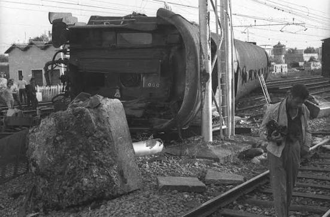
Strage di Gioia Tauro
La strage di Gioia Tauro è stato un attentato terroristico di matrice neofascista compiuto il 22 luglio 1970 nei pressi della Stazione di Gioia Tauro. In esso venne causato il deragliamento del direttissimo Treno del sole (Siracusa-Torino Porta Nuova). La sentenza della corte d'assise di Palmi n 3/96 del 27 febbraio 2001 individuò come responsabili tre esponenti di Avanguardia Nazionale: Vito Silverini, Vincenzo Caracciolo e Giuseppe Scarcella. Le cause non vennero mai accertate.
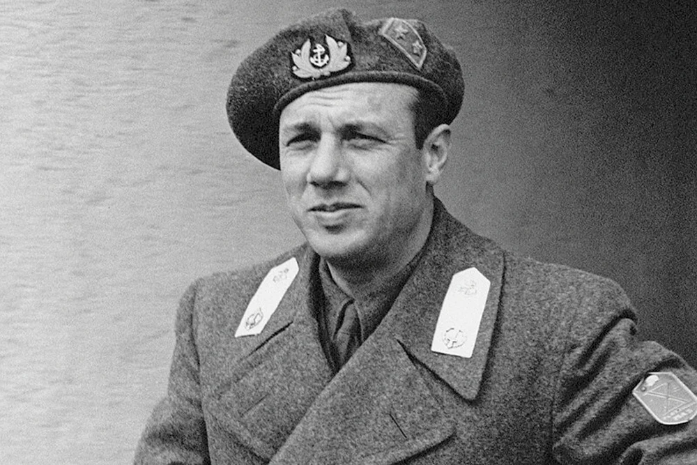
Golpe Borghese
Il golpe Borghese fu un tentato colpo di Stato avvenuto in Italia durante la notte tra il 7 e l'8 dicembre 1970 e organizzato da Junio Valerio Borghese, fondatore di Fronte Nazionale, in collaborazione con Avanguardia Nazionale. Il golpe fu annullato dallo stesso Borghese mentre era in corso di esecuzione, per motivi mai chiariti. Per evitare l'arresto, Borghese si rifugiò in Spagna dove rimase fino alla morte, avvenuta a Cadice il 26 agosto 1974, senza mai più rientrare in Italia benché l'ordine di cattura spiccato nei suoi confronti dalla magistratura italiana fosse stato revocato nel 1973.
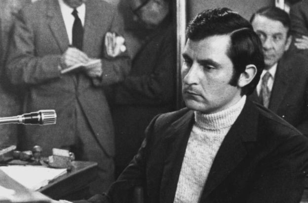
Omicidio Luigi Calabresi
L'omicidio Calabresi è il nome con cui i mass media sono soliti riferirsi all'assassinio del commissario di polizia e addetto all'ufficio politico della questura di Milano, Luigi Calabresi, avvenuto il 17 maggio 1972 dinanzi alla sua abitazione per mano di un commando di due militanti di Lotta Continua a colpi di arma da fuoco.
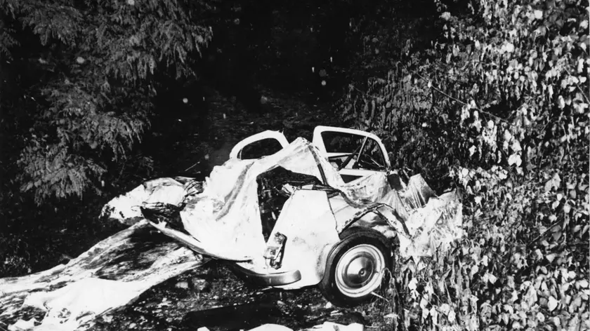
Strage di Peteano
La strage di Peteano è stata un atto terroristico di matrice politica di estrema destra commesso il 31 maggio 1972 in località Peteano, una frazione di Sagrado (GO) che provocò la morte di tre carabinieri e il ferimento di altri due. I cinque militari vennero attirati a controllare un'automobile sospetta che si rivelò essere un'autobomba che esplose quando si tentò di aprire lo sportello a cui il suo innesco era collegato.
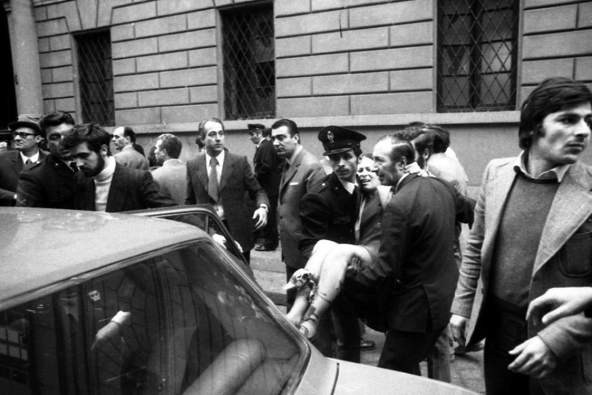
Strage della Questura di Milano
Alle 11:00 del mattino del 17 maggio 1973, in via Fatebenefratelli, davanti alla Questura di Milano, mentre si svolgeva la cerimonia in memoria del commissario Luigi Calabresi ucciso un anno prima, dopo che il Ministro dell'interno Mariano Rumor aveva scoperto il busto dedicato al funzionario ed era andato via in auto, un grosso ordigno esplose in mezzo alla folla di persone ancora riunite per la celebrazione. L'effetto della deflagrazione fu devastante: 4 persone morirono e 52 rimasero ferite. Solo dopo si scoprirà che lo scoppio era stato causato da una bomba a mano.
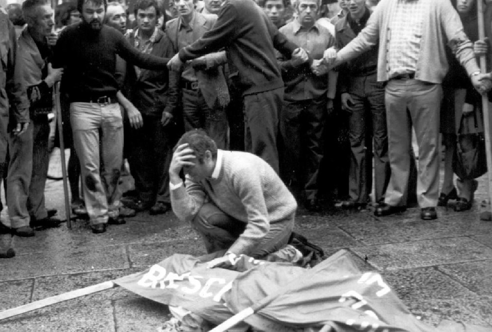
Strage di Piazza della Loggia
La strage di piazza della Loggia è stato un attentato terroristico di matrice neofascista con collaborazioni da parte di membri dello Stato italiano dell'epoca e dei servizi segreti italiani, compiuto il 28 maggio 1974 a Brescia, nella centrale piazza della Loggia: una bomba nascosta in un cestino portarifiuti fu fatta esplodere mentre era in corso una manifestazione contro il terrorismo neofascista, provocando la morte di otto persone e il ferimento di altre centodue.
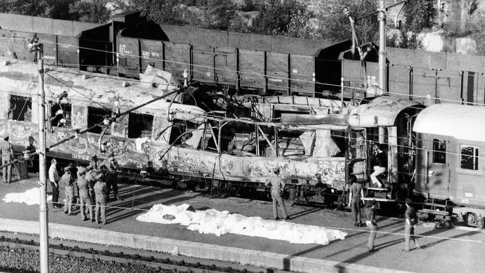
Strage Italicus
La strage dell'Italicus fu un attentato terroristico neofascista di tipo dinamitardo compiuto nella notte tra il 3 e il 4 agosto 1974 sul treno Italicus, mentre questo transitava presso San Benedetto Val di Sambro, in provincia di Bologna. Nell'attentato morirono 12 persone. È considerato uno dei più gravi attentati verificatisi negli anni di piombo, commesso da gruppi neofascisti e di estrema destra. Per la strage dell'Italicus, come per le altre stragi, furono incriminati come esecutori diversi esponenti del neofascismo italiano, ma l'iter processuale si è concluso con l'assoluzione degli imputati.
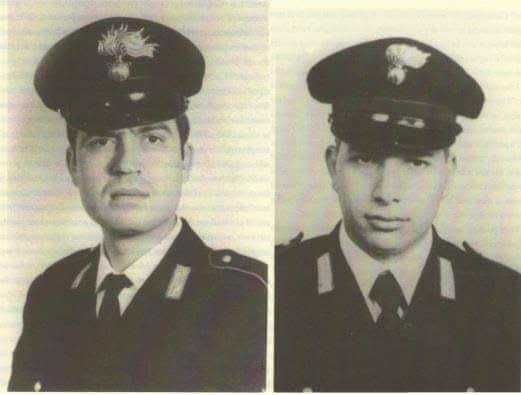
Strage di Alcamo Marina
La strage di Alcamo Marina avvenne nella notte tra il 26 e il 27 gennaio 1976 ad Alcamo Marina in provincia di Trapani, all'interno di una stazione carabinieri, quando nella notte due carabinieri vennero assassinati a colpi di arma da fuoco. La strage rimane formalmente un delitto senza colpevoli. L'inchiesta iniziale si è rivelata uno dei più drammatici errori giudiziari della storia d'Italia, costruito su confessioni estorte sotto tortura. Gli originari condannati all'ergastolo sono stati completamente scagionati, dopo oltre venti anni di carcere, e assolti nel 2012.
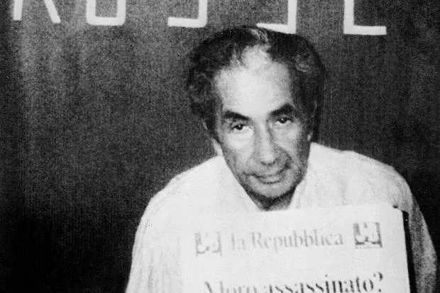
Rapimento Moro
La mattina del 16 marzo 1978, giorno in cui il nuovo governo guidato da Giulio Andreotti stava per essere presentato in Parlamento per ottenere la fiducia, l'auto che trasportava Aldo Moro dalla sua abitazione alla Camera dei deputati fu intercettata e bloccata in via Mario Fani a Roma da un nucleo armato delle Brigate Rosse. In pochi minuti, sparando con armi automatiche, i brigatisti uccisero i due carabinieri a bordo dell'auto di Moro (Oreste Leonardi e Domenico Ricci) e i tre poliziotti che viaggiavano sull'auto di scorta (Raffaele Iozzino, Giulio Rivera e Francesco Zizzi), quindi sequestrarono il presidente della Democrazia Cristiana.
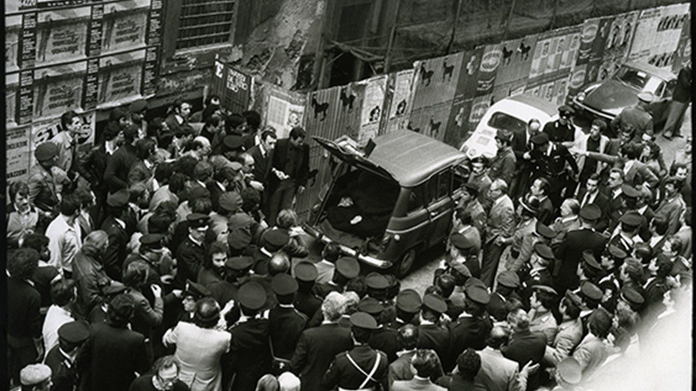
Omicidio Moro
Dopo una prigionia di 55 giorni, durante la quale le Brigate Rosse richiesero invano uno scambio di prigionieri con lo Stato italiano, Moro fu sottoposto a un processo politico da parte del cosiddetto «tribunale del popolo», istituito dalle stesse BR, e quindi ucciso il 9 maggio. Il suo cadavere fu ritrovato quello stesso giorno nel bagagliaio di una Renault 4 rossa parcheggiata a Roma in via Michelangelo Caetani, distante circa 150 metri da via delle Botteghe Oscure, sede nazionale del Partito Comunista Italiano, e circa il doppio da piazza del Gesù, sede nazionale della Democrazia Cristiana.
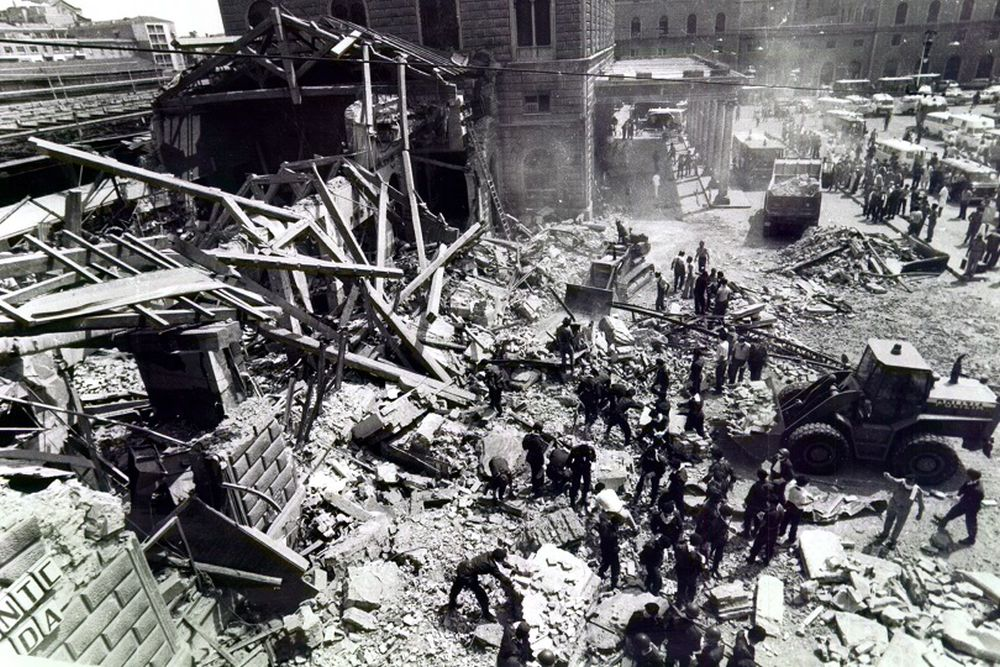
Strage della Stazione di Bologna
La strage di Bologna fu un attentato di matrice neofascista e piduista avvenuto sabato 2 agosto 1980 alla stazione Centrale di Bologna. Un ordigno, posto nella sala d'aspetto di seconda classe, esplose provocando la morte di 85 persone e il ferimento di oltre 200. Si tratta dell'attentato terroristico più grave nella storia della Repubblica italiana.Le indagini si indirizzarono quasi subito sulla pista neofascista; ma solo dopo un lungo iter giudiziario e numerosi depistaggi, la sentenza definitiva del 1995 condannò due terroristi del gruppo Nuclei armati rivoluzionari: Valerio Fioravanti e Francesca Mambro, «come appartenenti alla banda armata che ha organizzato e realizzato l'attentato di Bologna». Nel 2007 si aggiunse la condanna di Luigi Ciavardini, minorenne all'epoca dei fatti, e nel 2023 quella di Gilberto Cavallini.